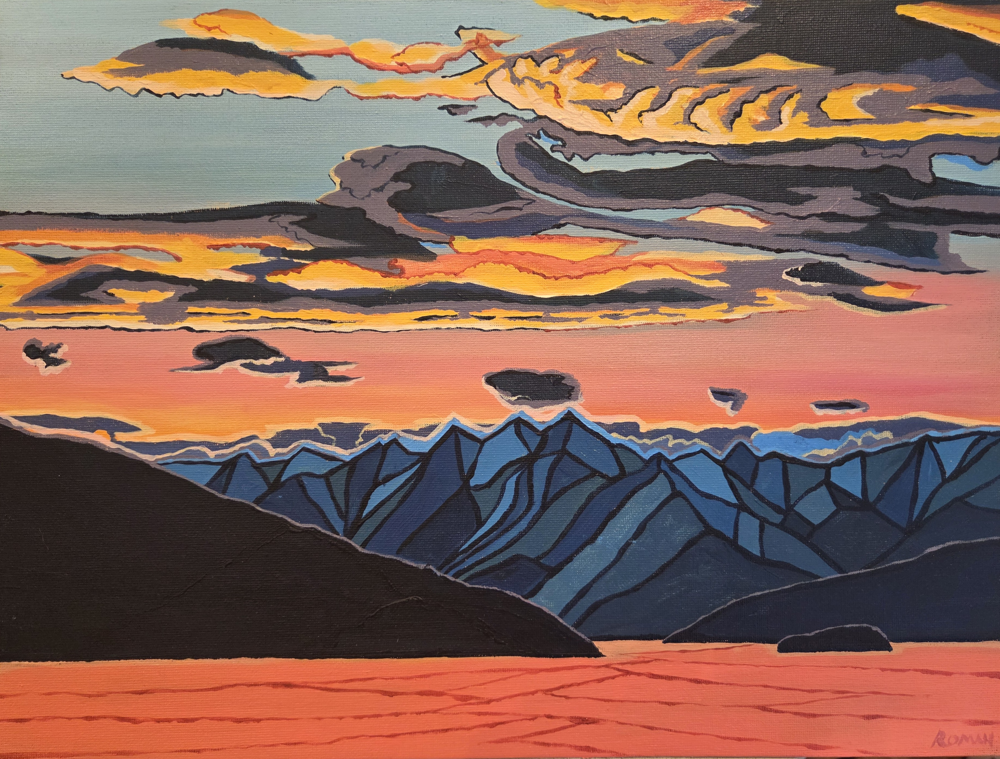
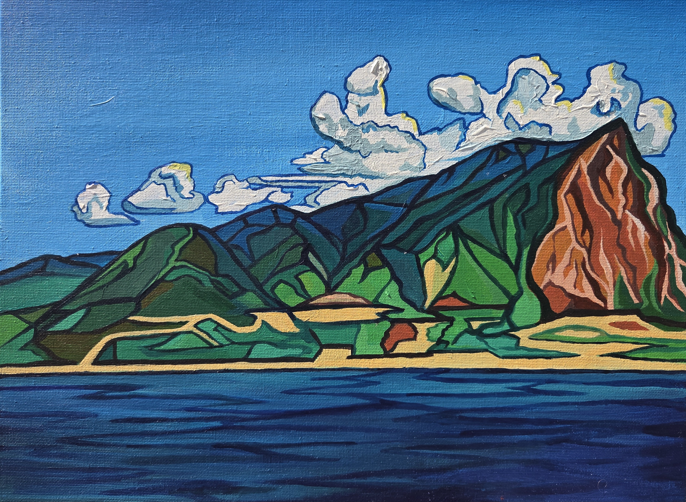
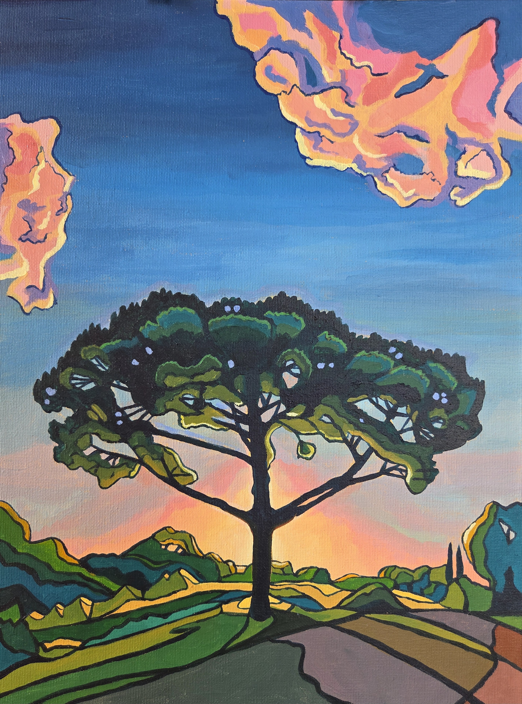
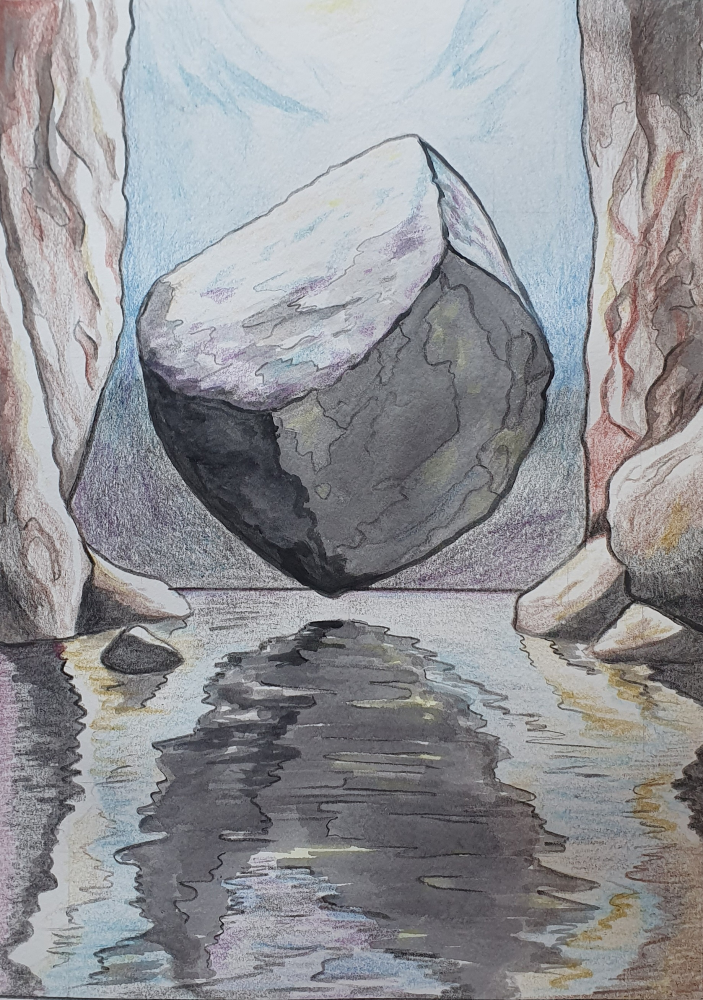

I’m Roman Cassini, a painter and photographer from West London
My work explores complexity, perspective, quality, and subjective experience.
Commissions




My work explores complexity, perspective, quality, and subjective experience.
Commissions


